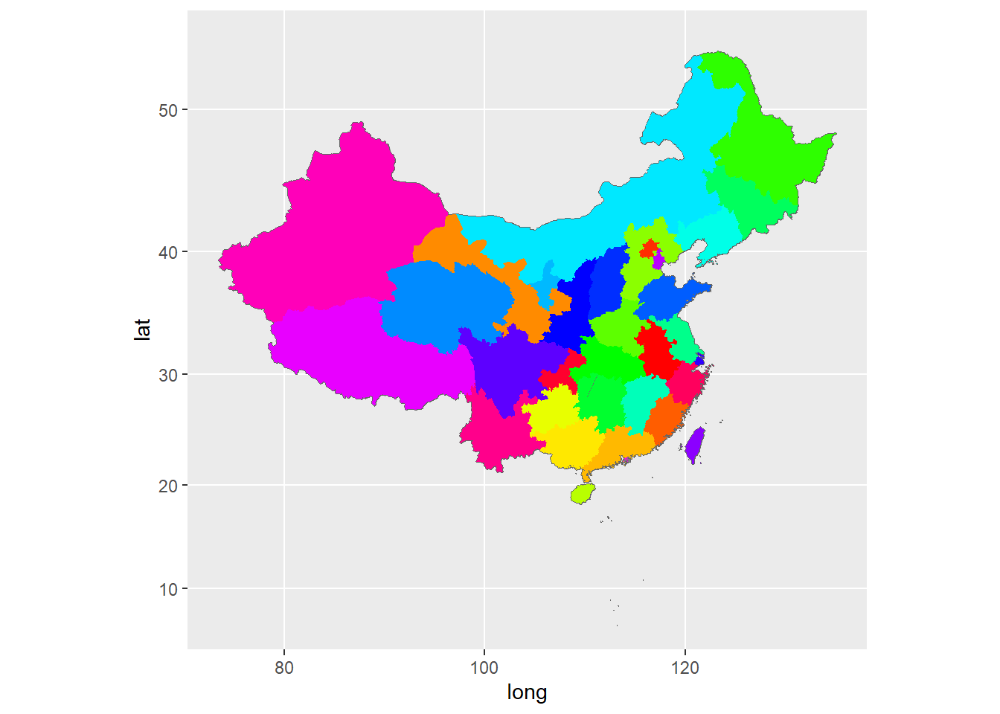
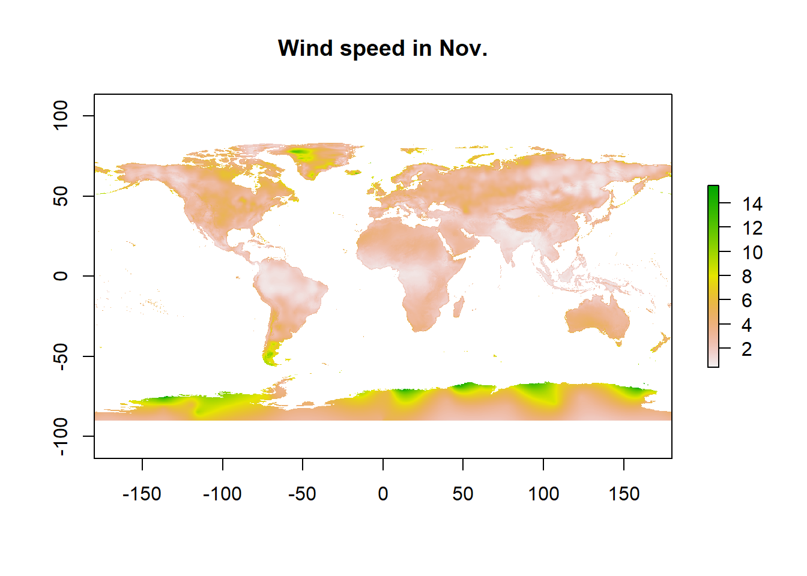

Section 21 Plotting with R (II): making maps
Prerequisites
Load the libraries with R:
## 载入需要的程辑包：sp## Warning: 程辑包'sp'是用R版本4.3.3 来建造的## Warning: 程辑包'plyr'是用R版本4.3.3 来建造的## -----------------------------------------------------------------------------------------------------------------------------------------------------------------------------------------------------------------------------------------------------------## You have loaded plyr after dplyr - this is likely to cause problems.
## If you need functions from both plyr and dplyr, please load plyr first, then dplyr:
## library(plyr); library(dplyr)## -----------------------------------------------------------------------------------------------------------------------------------------------------------------------------------------------------------------------------------------------------------##
## 载入程辑包：'plyr'## The following object is masked from 'package:FSA':
##
## mapvalues## The following object is masked from 'package:ggpubr':
##
## mutate## The following objects are masked from 'package:dplyr':
##
## arrange, count, desc, failwith, id, mutate, rename, summarise, summarize## 载入需要的程辑包：grid## Warning: 程辑包'raster'是用R版本4.3.3 来建造的##
## 载入程辑包：'raster'## The following object is masked from 'package:ggsn':
##
## scalebar## The following object is masked from 'package:EnvStats':
##
## cv## The following object is masked from 'package:dplyr':
##
## select## Warning: 程辑包'ggmap'是用R版本4.3.3 来建造的## ℹ Google's Terms of Service: <https://mapsplatform.google.com>
## Stadia Maps' Terms of Service: <https://stadiamaps.com/terms-of-service/>
## OpenStreetMap's Tile Usage Policy: <https://operations.osmfoundation.org/policies/tiles/>
## ℹ Please cite ggmap if you use it! Use `citation("ggmap")` for details.## Warning: 程辑包'mapproj'是用R版本4.3.3 来建造的## 载入需要的程辑包：maps## Warning: 程辑包'maps'是用R版本4.3.3 来建造的##
## 载入程辑包：'maps'## The following object is masked from 'package:plyr':
##
## ozone## The following object is masked from 'package:astsa':
##
## unempShape file
ESRI shapefile (or shape file) is widely used in
environmental science and geoscience. A shapefile consists of various
files of the same name, but with different extensions. They should all
be in one directory. Here we use the shape file of China map as an
example, download
it. Decompress it. Open the folder, you will see there are three
files of different formats (.dbf, .shp,
.shx). In R, we can read the shape file via:
# Location of the .shp file
Local_path <- "China_map/"
# Read china map, a shape file
China_map <- rgdal::readOGR(paste0(Local_path, "bou2_4p.shp"))## Warning: OGR support is provided by the sf and terra packages among others## Warning: OGR support is provided by the sf and terra packages among others## Warning: OGR support is provided by the sf and terra packages among others## Warning: OGR support is provided by the sf and terra packages among others## Warning: OGR support is provided by the sf and terra packages among others## Warning: OGR support is provided by the sf and terra packages among others## Warning: OGR support is provided by the sf and terra packages among others## OGR data source with driver: ESRI Shapefile
## Source: "D:\repo\ese335\China_map\bou2_4p.shp", layer: "bou2_4p"
## with 925 features
## It has 7 fields
## Integer64 fields read as strings: BOU2_4M_ BOU2_4M_ID## [1] "SpatialPolygonsDataFrame"
## attr(,"package")
## [1] "sp"## [1] "AREA" "PERIMETER" "BOU2_4M_" "BOU2_4M_ID" "ADCODE93" "ADCODE99" "NAME"From here, we can see that there are 925 polygons, and R
just follows the polygons defined by this object then line them each one
up. If you want to see the data hidden in
SpatialPolygonsDataFrame, we can use the operator
@:
## AREA PERIMETER BOU2_4M_ BOU2_4M_ID ADCODE93 ADCODE99 NAME
## 0 54.447 68.489 2 23 230000 230000 \xba\xda\xc1\xfa\xbd\xadʡ
## 1 129.113 129.933 3 15 150000 150000 \xc4\xda\xc3ɹ\xc5\xd7\xd4\xd6\xce\xc7\xf8
## 2 175.591 84.905 4 65 650000 650000 \xd0½\xaeά\xce\xe1\xb6\xfb\xd7\xd4\xd6\xce\xc7\xf8
## 3 21.315 41.186 5 22 220000 220000 \xbc\xaa\xc1\xd6ʡ
## 4 15.603 38.379 6 21 210000 210000 \xc1\xc9\xc4\xfeʡ
## 5 41.508 76.781 7 62 620000 620000 \xb8\xca\xcb\xe0ʡ## AREA PERIMETER BOU2_4M_ BOU2_4M_ID ADCODE93 ADCODE99 NAME
## 919 0 0.012 921 3099 810000 810000 \xcf\xe3\xb8\xdb\xccر\xf0\xd0\xd0\xd5\xfe\xc7\xf8
## 920 0 0.037 922 3110 810000 810000 \xcf\xe3\xb8\xdb\xccر\xf0\xd0\xd0\xd5\xfe\xc7\xf8
## 921 0 0.018 923 3109 810000 810000 \xcf\xe3\xb8\xdb\xccر\xf0\xd0\xd0\xd5\xfe\xc7\xf8
## 922 0 0.014 924 3112 810000 810000 \xcf\xe3\xb8\xdb\xccر\xf0\xd0\xd0\xd5\xfe\xc7\xf8
## 923 0 0.079 925 3114 810000 810000 \xcf\xe3\xb8\xdb\xccر\xf0\xd0\xd0\xd5\xfe\xc7\xf8
## 924 0 0.011 926 3115 810000 810000 \xcf\xe3\xb8\xdb\xccر\xf0\xd0\xd0\xd5\xfe\xc7\xf8# Convert characters
China_map$NAME <- iconv(China_map$NAME, "GBK")
# Check the attributes, use the operator @
map_data <- China_map@data
head(map_data)## AREA PERIMETER BOU2_4M_ BOU2_4M_ID ADCODE93 ADCODE99 NAME
## 0 54.447 68.489 2 23 230000 230000 黑龙江省
## 1 129.113 129.933 3 15 150000 150000 内蒙古自治区
## 2 175.591 84.905 4 65 650000 650000 新疆维吾尔自治区
## 3 21.315 41.186 5 22 220000 220000 吉林省
## 4 15.603 38.379 6 21 210000 210000 辽宁省
## 5 41.508 76.781 7 62 620000 620000 甘肃省## AREA PERIMETER BOU2_4M_ BOU2_4M_ID ADCODE93 ADCODE99 NAME
## 919 0 0.012 921 3099 810000 810000 香港特别行政区
## 920 0 0.037 922 3110 810000 810000 香港特别行政区
## 921 0 0.018 923 3109 810000 810000 香港特别行政区
## 922 0 0.014 924 3112 810000 810000 香港特别行政区
## 923 0 0.079 925 3114 810000 810000 香港特别行政区
## 924 0 0.011 926 3115 810000 810000 香港特别行政区Use ggplot() to plot the shape file:
# Quick plot use ggplot
ggplot(China_map, aes(x = long, y = lat, group = group)) +
geom_path(color = "grey40") +
geom_polygon(fill = 'lightblue')## Warning: `fortify(<SpatialPolygonsDataFrame>)` was deprecated in ggplot2 3.4.4.
## ℹ Please migrate to sf.
## ℹ The deprecated feature was likely used in the ggplot2 package.
## Please report the issue at <https://github.com/tidyverse/ggplot2/issues>.
## This warning is displayed once every 8 hours.
## Call `lifecycle::last_lifecycle_warnings()` to see where this warning was generated.## Regions defined for each PolygonsThis is certainly not very good-looking. Let’s first assign each province with an id:
# Assign each province with an ID
China_map2 <- data.frame(China_map, id=seq(0:924)-1)
# Join two data sets by NAME
China_map_new <- join(fortify(China_map), China_map2, type = "full")## Regions defined for each Polygons
## Joining by: idHere we use the fortify() function to include the lat
and lon information. Now the new shape file can be plotted as:
# Plot the new shape file
ggplot(China_map_new, aes(x = long, y = lat, group = id, fill = NAME)) +
# Plot the border
geom_path(color = 'grey40') +
geom_polygon() +
# Using different colors
scale_fill_manual(values = rainbow(33), guide = F) +
coord_map()## Warning: The `guide` argument in `scale_*()` cannot be `FALSE`. This was deprecated in ggplot2 3.3.4.
## ℹ Please use "none" instead.
## This warning is displayed once every 8 hours.
## Call `lifecycle::last_lifecycle_warnings()` to see where this warning was generated.
We can also edit the original shape file by adding new information.
For example, here we want to add both NAME_EN and
POP onto the shape file:
# Name in Chinese
# This is the same as the NAME in the original shape file
NAME <- c("北京市" , "天津市" , "河北省" , "山西省" , "内蒙古自治区" ,
"辽宁省" , "吉林省" , "黑龙江省" , "上海市" , "江苏省" ,
"浙江省" , "安徽省" , "福建省" , "江西省" , "山东省" ,
"河南省" , "湖北省" , "湖南省" , "广东省" , "广西壮族自治区" ,
"海南省" , "重庆市" , "四川省" , "贵州省" , "云南省" ,
"西藏自治区", "陕西省" , "甘肃省" , "青海省" , "宁夏回族自治区" ,
"新疆维吾尔自治区" , "台湾省" , "香港特别行政区")
# Name in English accordingly
NAME_EN <- c("Beijing" , "Tianjin" , "Hebei" , "Shanxi" , "Inner Mongolia" ,
"Liaoning", "Jilin" , "Heilongjiang", "Shanghai" , "Jiangsu" ,
"Zhejiang", "Anhui" , "Fujian" , "Jiangxi" , "Shandong" ,
"Henan" , "Hubei" , "Hunan" , "Guangdong", "Guangxi" ,
"Hainan" , "Chongqing", "Sichuan" , "Guizhou" , "Yunnan" ,
"Tibet" , "Shaanxi" , "Gansu" , "Qinghai" , "Ningxia" ,
"Xinjiang" , "Taiwan" , "Hong Kong" )
# Population of each province, from the 2021 census
Pop <- c(21893095 , 13866009 , 74610235 , 34915616 , 24049155 ,
42591407 , 24073453 , 31850088 , 24870895 , 84748016 ,
64567588 , 61027171 , 41540086 , 45188635 , 101527453 ,
99365519 , 57752557 , 66444864 , 126012510 , 50126804 ,
10081232 , 32054159 , 83674866 , 38562148 , 47209277 ,
3648100 , 39528999 , 25019831 , 5923957 , 7202654 ,
25852345 , 23561236 , 7474200 )
# Make data frame
Popdata <- data.frame(NAME, NAME_EN, Pop)
# Joint the data by NAME
China_map_pop <- join(China_map_new, Popdata, type = "full")## Joining by: NAME# Plot
ggplot(China_map_pop, aes(x = long, y = lat, group = id, fill = Pop)) +
geom_polygon() +
geom_path(color = "grey40") +
coord_map()
With some efforts, this can plot can be made much better:
ggplot(China_map_pop, aes(x = long, y = lat, group = group, fill=Pop)) +
labs(fill = "Population")+
geom_polygon()+
geom_path(color = "grey40")+
# Try a different color theme
scale_fill_gradientn(colours=rev(heat.colors(20)),na.value="grey90",
guide = guide_colourbar(barwidth = 0.8, barheight = 10)) +
# Projects a portion of the earth
coord_map() +
# Change theme
theme_classic() +
# Change labels
labs(fill = "Population", x = "Longitude", y = "Latitude") +
# Add map scale
ggsn::scalebar(data = China_map_pop, dist = 500, dist_unit = "km",
border.size = 0.4, st.size = 2,
box.fill = c('black','white'),
transform = TRUE, model = "WGS84") You can only select one (or more) province and add one point to the plot:
## Extract Guangdong and Hong Kong from the data
GD_HK <- subset(China_map_pop, NAME == "广东省" | NAME == "香港特别行政区")
# Plot
ggplot(GD_HK,aes(x = long, y = lat, group = id)) +
# Polygon
geom_polygon(fill = "lightblue") +
# Border
geom_path(color = "lightblue") +
# Add one point: SUSTech (lat:22.59670, lon:113.98201)
geom_point(x = 113.98201, y = 22.59670, fill = NA) +
# Add label
annotate("text", x = 113.98201, y = 22.59670+0.25, label = "SUSTech") +
# Projects a portion of the earth
coord_map()Raster data
Raster files have a much more compact data structure than vectors. Because of their regular structure, the coordinates do not need to be recorded for each pixel or cell in the rectangular extent. A raster is defined by:
CRS (coordinate reference system)
Coordinates of its origin
A distance or cell size in each direction
A dimension or numbers of cells in each direction
An array of cell values
Given this structure, coordinates for any cell can be computed and don’t need to be stored.
The raster package is a major extension of spatial data
classes to access large rasters and in particular, to process very large
files. It includes RasterLayer and functions for converting
among different classes and operators for computations on the raster
data.
We can use raster() to read in raster files. Download
this tiff
file (wc2.1_10m_wind_11.tif, ~ 2.4MB), which is the
mean wind speed (m s-1) in Nov. from 1970-2000 provided by
the WorldClim.
The data is at a resolution of 10 minutes (~
340 km2).
In R, we can load it as:
# Read the tiff file
Wind_Nov <- raster("wc2.1_10m_wind_11.tif")
# Look at the raster attributes
Wind_Nov## class : RasterLayer
## dimensions : 1080, 2160, 2332800 (nrow, ncol, ncell)
## resolution : 0.1666667, 0.1666667 (x, y)
## extent : -180, 180, -90, 90 (xmin, xmax, ymin, ymax)
## crs : +proj=longlat +datum=WGS84 +no_defs
## source : wc2.1_10m_wind_11.tif
## names : wc2.1_10m_wind_11
## values : 0.40025, 15.78051 (min, max)We can plot it using plot() or image()
function:

# Set color
col <- terrain.colors(30)
# Quick using image()
image(Wind_Nov, main="Wind speed in Nov.", col=col)
# Add contour lines
contour(Wind_Nov, add=T, col="red")Or with ggplot(), we can make a better map:
# Convert the raster to a date.frame
Wind_Nov_df <- as.data.frame(Wind_Nov, xy = TRUE)
# Check the data structure
str(Wind_Nov_df)## 'data.frame': 2332800 obs. of 3 variables:
## $ x : num -180 -180 -180 -179 -179 ...
## $ y : num 89.9 89.9 89.9 89.9 89.9 ...
## $ wc2.1_10m_wind_11: num NA NA NA NA NA NA NA NA NA NA ...# Making plot
ggplot() +
geom_raster(data = Wind_Nov_df,
aes(x = x, y = y, fill = wc2.1_10m_wind_11)) +
# Change labels
labs(x="Latitude", y="Longitude") +
# Change theme
theme_bw() +
coord_equal() +
# Change legend
scale_fill_gradient( "Wind speed (m/s)", limits=c(0,20),
low = "white",
high = "red",
n.breaks = 10,
space = "Lab",
na.value = "grey50",
guide = "colourbar",
aesthetics = "fill") +
# Adjust the theme
theme(axis.title.x = element_text(size=16),
axis.title.y = element_text(size=16, angle=90),
axis.text.x = element_text(size=14),
axis.text.y = element_text(size=14),
panel.grid.major = element_blank(),
panel.grid.minor = element_blank(),
legend.position = "right",
legend.key = element_blank()
) +
# Add a title
ggtitle("Wind Speed in Nov.") 
You can also use crop() function to select an area of
interest:
# Define the crop extent
Crop_box <- c(100,125,15,30)
# Crop the raster
Wind_Nov_crop <- crop(Wind_Nov, Crop_box)
# Plot cropped DEM
plot(Wind_Nov_crop, main="Wind speed in Nov.")Adding features to a base map
Add points
Suppose we want to plot site locations on a city scale, and we want
to add a base map that shows road, terrain, and built-up areas. This can
be done with the ggmap() package:
# Site information
Site_name <- c("SUSTech", "Longhua", "Xichong", "Baoan", "Kuiyong")
Site_lon <- c(114.06667,114.02200,114.56111,113.89606,114.42824)
Site_lat <- c(22.61667,22.72882,22.48077,22.53965,22.63427)
Site_type <- c("Urban", "Urban", "Background", "Urban", "Rural")
# Make a data frame
Site_data <- data.frame(name=Site_name, lon=Site_lon, lat=Site_lat, type=Site_type)
# Get the lat and lon range
Mapbox <- make_bbox(lon = Site_data$lon, lat = Site_data$lat, f = .1)
# Pull the base map
# The keyword zoom defines the map resolution
# Here we use base map from stadiamaps
# To obtain an API key and enable services,
# go to https://client.stadiamaps.com/signup/
# Then use register_stadiamaps() to set the API key
Base_map <- get_stadiamap(Mapbox, zoom = 10, maptype = "stamen_terrain")## ℹ © Stadia Maps © Stamen Design © OpenMapTiles © OpenStreetMap contributors.# Plot
ggmap(Base_map) +
# Add sites
geom_point(data=Site_data, aes(x=lon, y=lat, fill=type, shape=type),
color="white", cex=5.5) + # plot the points
# Change color
scale_fill_manual(values = c("green", "blue", "red"),
labels=c("Background", "Rural","Urban"), name=NULL) +
# Change shape
scale_shape_manual(values = c(21,22,24),
labels=c("Background", "Rural","Urban"), name=NULL) +
# Change labels and title
labs(x="Latitude", y="Longitude", title="Monitoring sites") + # label the axes
# Change theme
theme_bw() +
theme(legend.position="bottom",
legend.key = element_rect(colour = "white"),
axis.text = element_text(size = rel(0.75)),
axis.text.x = element_text(angle=45, vjust=0.5)) 
Add a path
Download the track of Typhoon Mangkhut, and read via:
# Read the data
Mangkhut_data <- read.table("Mangkhut.txt")
# Get path and max wind speed
Mangkhut_lat <- Mangkhut_data$V4*0.1
Mangkhut_lon <- Mangkhut_data$V5*0.1
Mangkhut_pressure <- Mangkhut_data$V6
Mangkhut_max_speed <- Mangkhut_data$V7*0.514let’s plot the max wind speed on the map:
# Make a data frame for ggplot
Mangkhut_data_new <- data.frame(lat=Mangkhut_lat,lon=Mangkhut_lon,
pressure=Mangkhut_pressure, speed=Mangkhut_max_speed)
# Get the domain
Domain <- make_bbox(lon = Mangkhut_data_new$lon,
lat = Mangkhut_data_new$lat, f = .1)
# Get the base map
Base_map <- get_stadiamap(Domain, zoom = 5, maptype = "stamen_terrain")## ℹ © Stadia Maps © Stamen Design © OpenMapTiles © OpenStreetMap contributors.
# Plot base map
Map1 <- ggmap(Base_map)
# Plot the path
Map1 +
# Plot the track
geom_path(data = Mangkhut_data_new,
aes(color=speed), size=1.5,
lineend = "round") +
# Set the color
scale_colour_gradient("Max Wind Speed (m/s)", low = "white", high = "red",
breaks = seq(10, 60, by = 10)) +
# Change labels
labs(x="Latitude", y="Longitude", title="Typhoon Mangkhut Track") + # label the axes
theme_bw() ## Warning: Using `size` aesthetic for lines was deprecated in ggplot2 3.4.0.
## ℹ Please use `linewidth` instead.
## This warning is displayed once every 8 hours.
## Call `lifecycle::last_lifecycle_warnings()` to see where this warning was generated.
In-class exercises
Exercise #1
Plot wind speed in Nov. near your hometown (a 10 degree
by 10 degree domain) using the Wind_Nov
object.
Exercise #2
Plot a map of your home city (zoom=12), and add a few points to the map.
Further reading
Roger S. Bivand, Edzer J. Pebesma, Virgilio Gómez-Rubio, Applied Spatial Data Analysis with R.